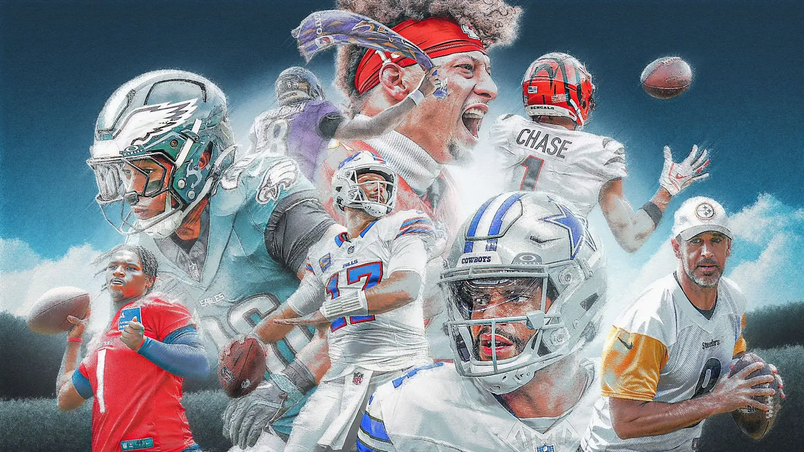
When the league starts, I typically do a matrix, grading QB, RB, WR, TE and FLEX/Bench. This year I did the same but was less analytical, because let’s face it, I might as well throw darts.
For tiebreakers, I relied on historical data (aka previous champs, etc)
In these rankings, you’ll see my favorite and least favorite picks for each team. This is not my prediction of who will win you the league, it’s just an expression of how I feel about the player and maybe where they were drafted, etc. Vibe check.
But nonetheless, I give you… The Week One Power Rankings!
Love you guys.
- Snake 🐍
(rip Kris!)
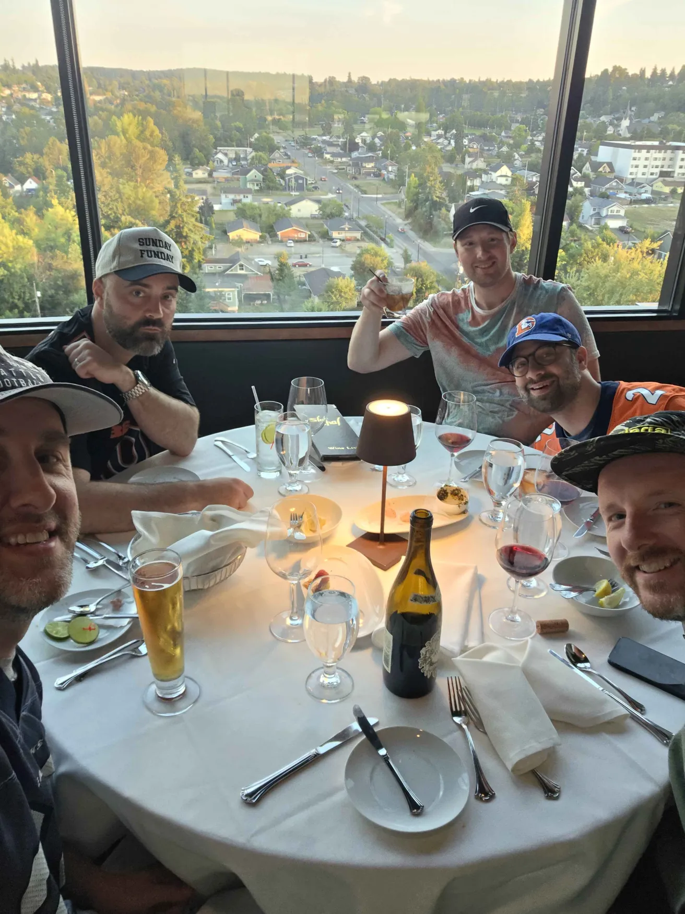
Draft Grades & Week One Power Rankings
1. Seif -> A
Last Year’s Preseason Ranking: 10th Raw Score: 6 (lower is better) Favorite Pick: CMC Least Favorites: Flowers & Judkins
You know him. You hate him. He’s Seif.
How did this team get #1? IDK, my rankings are stupid. But for real, top-tier QB and TE keep the floor very high. Some major question marks, but some safer picks as well. There’s a timeline where this team has QB1, RB1, and TE1.
I love gambling, did you know that? So of course, I love the CMC pick. I also love it if he saved me from picking him on the next pick.
I’m out on Flowers this year - think the Ravens will roll, and hopefully that means more time for Henry and less balls going Zay’s Way.
Judkins is still unsigned. Also, when he does sign, he’ll still be on the Browns.
Safe - Pollard, Samuel and Diggs all seem primed to have solid years.
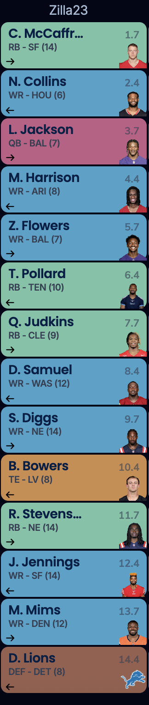
2. Neil-> B+
Last Year’s Preseason Ranking: 5th Raw Score: 7 Favorite Pick: Hampton Least Favorite: K. Johnson
Neil snags the only top-tier TE in the draft who wasn’t kept, with the early-ish pickup of McBride.
Then he follows it up with the so-popular Omarion Hampton. Should be interesting to see the split with the one-eyed pirate, active in the same backfield, and in a Greg Roman system. Nonetheless, I have kicked myself over and over for passing on Hampton just a few picks prior.
Kaleb Johnson - I’ve heard of him and have never seen him, IDK. Guess the scheme fit is good. But I’m super good on not having any part of the Steelers offense this year.
Do know one thing though… definitely drafted the wrong Bills receiver.
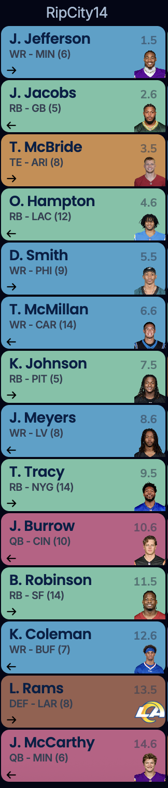
3. Andy -> B
Last Year’s Preseason Ranking: 3rd Raw Score: 8 Favorite Picks: Rounds 5-8 Least Favorite: Mahomes
No team makes me want to barf more… * Nacua - tight butthole every time he has the rock and goes berserk. * Mahomes… * Jeanty - fuck the raiders * Harvey - stealin my guy * Addison - stealin my guy * Brown - why did I let you go bb? 👨🪞
Mahomes is washed, let’s move on. For real, he’ll probably bounce back, but just felt early.
Rounds 5-8 were magic on the turn. Love Jameo to pop. Harvey scares me a bit in a Payton offense, but he could go crazy snap count depending. Ridley doesn’t have Levis throwing to him. Addison is a fuckin stud.
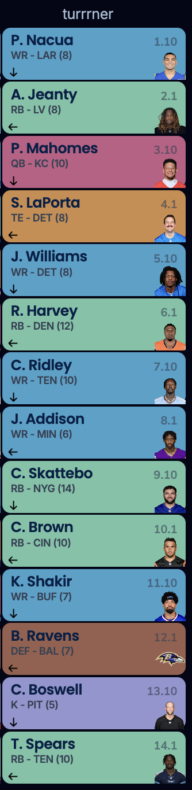
4. PJ -> B-
Last Year’s Preseason Ranking: Raw Score: 9 Favorite Picks: Hunter, Engram, BO Least Favorite: Blue
I swear I won’t talk about Treveyon Henderson.
Really liked the middle of the draft. Kinda crazy that Hunter would be the third rookie WR off the board. Can he stay healthy with the extra work?
Engram and Nix are an elite stack, no better in the world.
After a very strong, well rounded 10 rounds, I feel uninspired with 11-14. Don’t like any Dallas RB this year (spoiler: wait until the next team), but maybe the young guy emerges.
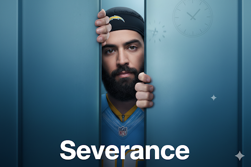
^ Keenan beginning his reintegration with the Chargers after having to spend a year below with the Bears (lmao Nano Banana, he ain’t young or suave)
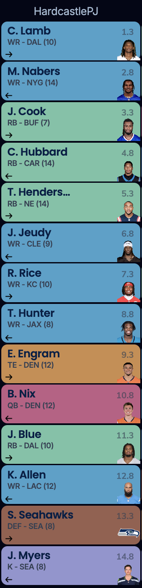
5. Jake -> C+
Last Year’s Preseason Ranking: 4 Raw Score: 9.5 Favorite Pick: Golden & Egbuka Least Favorite: Javonte & Monty
Deepest WR room if the young guns pan out, since I have three potential WR1s ahead of them. Feeling good about Golden and Egbuka being in great scenarios. Could be in a position where I don’t know which elite WRs to start (please.)
On the other hand - I went directly against my draft notes, where my #1 rule was to leave round five with three RBs. I’ve got a pretty low RB ceiling, unless K9 gets hurt (so maybe I’ll be okay). Totally forgot about the Lions O-Line changes when drafting Monty - oh well, I love him.
As a gamblin man, I do know that I’ve got three dudes who will always be minus odds for scoring touchdowns, Hurts, Henry and Monty. That feels good.
Excited to see Loveland on MNF to round out week one, against Seif!
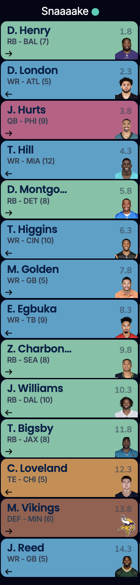
6. Tony -> C
Last Year’s Preseason Ranking: 1st Raw Score: 10 Favorite Picks: Warren and BILL Least Favorite: Kamara & Hall
I fucking loved Tony grabbing Warren and Bill Croskey Merritt on the turn. I don’t care if they don’t pan out, it was just fucking sick to watch him plug those two picks in with such confidence and pleasure. Best of luck with the rooks.
However, I was not a huge fan of Kamara or Hall in rounds 3-4 (not a flip). Some of the Sunday morning game windows could be tough, rooting for Rattler and Fields-led offenses.
Njoku in the last round is kinda crazy, too. (but Browns, ick.)
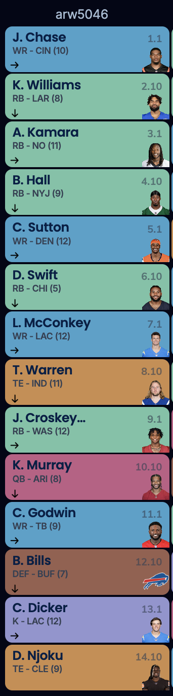
7. Chris -> C
Last Year’s Preseason Ranking: 6th Raw Score: 10 Favorite Picks: Gibbs & Pacheco Least Favorite: Mixon, definitely Mixon.
Fast feet on the turf, A sexy Lion, now gone, I miss your great play.
God, it’s so fun getting to watch Gibbs and having an investment - have fun! (but let’s trade Lion RBs later, you know we’re intertwined with them together in our destiny)
At that price, Pacheco seems like the prime bounce back candidate. RB depth is going to be a concern for this squad though (until Aaron Jones is hurt).
Oh man, I can’t believe Mixon went this early. Something is very fishy with his situation. I was wrong about him last year, but I’ve never been wrong about anything else in my life, so I’d say he’s toast.
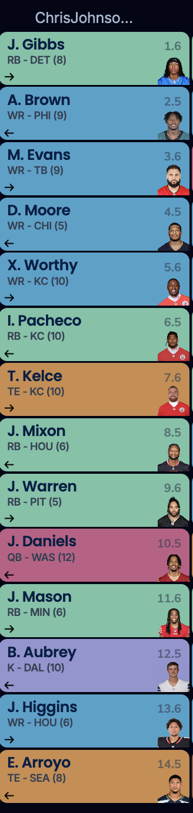
8. Joel -> C
Last Year’s Preseason Ranking: 9th Raw Score: 10 Favorite Picks: Achane Least Favorite: Olave, and the autodraft picking the Broncos D
Joel’s got a real if healthy team brewing here. Achane, KWIII, Olave, Dobbins, Andrews, Chubb (if he’s got anything left).
But of all of them, it’s Olave with the super yuk yuk. He’s one Troy Aikman away from a Troy Aikman. I can’t believe Joel drafted him after spending last year with him. And, I gotta say, I don’t exactly trust Rattler or Shough to keep him safe.
Achane… I would have snagged him on the next pick. I probably would have targetted him round one if not for the calf issue - but damn, he’s practicing and a go for week one - touché. When he and Tua play, it’s electric - so a bit of a parlay here, but parlays pay big (infrequently).
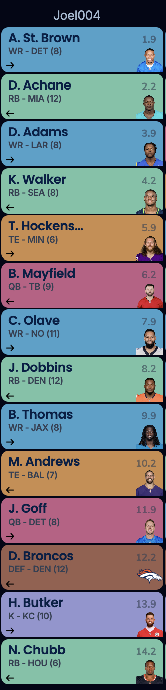
9. Kris -> D
Last Year’s Preseason Ranking: 8 Raw Score: 10.5 Favorite Picks: JT & Prescott Least Favorite: Metcalf & Pickens
Kris, you’re not last! I told you!
The vibes are fucking immaculate for this arrangement of players (not sure it’s a team).
Lol, I like some of it honestly but I gotta give Kris a hard time - though let’s stop a moment and appreciate Kris’ god-like ability to be the Slutler, even though he can’t read.
Okay, back to the team… it’s fucking wild that one guy ended up with JSN, Metcalf and Pickens. It’s gonna be an strange Christmas party at the office this year.
Loved a few snags at value: Taylor is an elite talent for the draft spot. I think Pickens might pop, and paired with Dak, that might be a week winner here and there - loved Kris’ confidence to grab Dak a little before ADP, too.
(pst… check your DM for the 15 trade offers I sent ya)
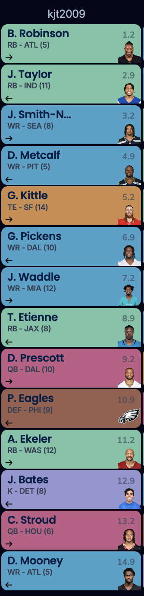
10. Pangy -> F
Last Year’s Preseason Ranking: 9th Raw Score: 11 Favorite Picks: Pearsall Least Favorite: Barkley
I’ve love to be wrong, but Saquon’s fighting history after his touch-heavy campaign last year. Hope he can stay healthy honestly.
At RB, Jones and Conner are two guys that could return their typical steady value. But I also see Benson and Mason breathing down their necks.
Garrett Wilson killed my family, and Kupp drove the getaway car. Odunze, no idea. Aiyuk, when he gonna play? F1, touchdown regression incoming?
Pearsall gonna ball tho. Bucky and JA17 are a backfield that warms your heart too.
One last word… PITTS.
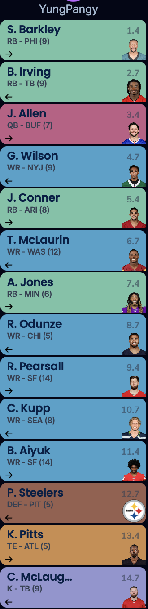
Best of luck to everyone besides Seif! 🔥
These rankings are written by a fool. Don’t listen to me! ⬇️
“And I knew exactly what to do. But in a much more real sense, I had no idea what to do.” – Michael Scott perfectly describing the draft process,
or being the general manager for the Browns
🤯 (EXCLUSIVE) BEHIND THE SCENES PEEK AT THE POWER RANKINGS PROCESS
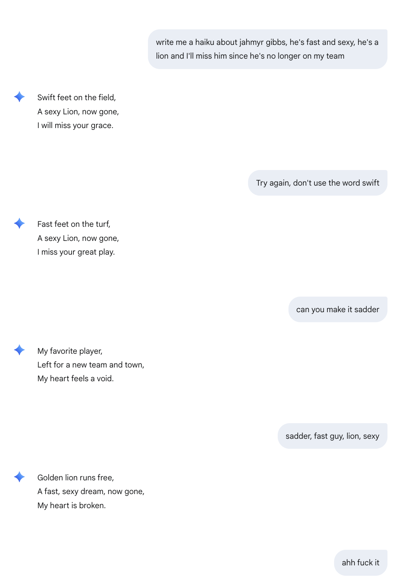